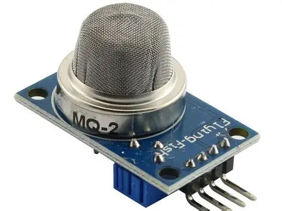

Identificação
| Nome do sensor | MQ-2 |
|---|---|
| Categoria | Gás |
| Tipo de sinal | Analógico (AO) e digital (DO por comparador LM393) |
Conceito
O MQ-2 é um sensor de gás da família MQ, baseado em um material semicondutor sensível à presença de gases combustíveis no ar. É capaz de detectar GLP, propano, butano, metano, álcool, hidrogênio e fumaça, sendo bastante utilizado em alarmes de incêndio e detectores de vazamento de baixo custo. Não é um sensor seletivo: ele responde a vários gases ao mesmo tempo, o que significa que indica a presença de uma atmosfera combustível, mas não identifica com precisão qual gás está presente nem sua concentração exata sem uma calibração cuidadosa para o gás alvo.

Princípio de funcionamento
O elemento sensor é uma pastilha de dióxido de estanho (SnO₂), um semicondutor cuja condutividade é baixa em ar limpo. Uma resistência interna de aquecimento mantém a pastilha entre 200 °C e 300 °C, temperatura na qual o oxigênio do ar fica adsorvido em sua superfície, capturando elétrons livres e elevando a resistência elétrica. Quando moléculas de gás combustível entram em contato com a superfície aquecida, elas reagem com esse oxigênio adsorvido e liberam os elétrons de volta ao material, reduzindo a resistência do sensor. Essa variação de resistência é convertida em tensão por um divisor resistivo e lida pelo conversor analógico-digital do microcontrolador: quanto maior a concentração de gás, maior a tensão de saída.
Principais especificações técnicas
| Gases detectados | GLP, propano, butano, metano, álcool, hidrogênio e fumaça |
|---|---|
| Faixa de detecção | 300 ppm a 10.000 ppm |
| Tensão de alimentação | 5 V CC |
| Consumo do aquecedor | Cerca de 150 mA (aproximadamente 800 mW) |
| Resistência de carga (RL) | Ajustável, normalmente entre 5 kΩ e 47 kΩ |
| Tempo de resposta | Menor que 10 s |
| Pré-aquecimento | Mínimo de 20 minutos; 24 a 48 h para estabilização inicial |
| Vida útil típica | Cerca de 5 anos em operação contínua |
| Faixa de temperatura de uso | -20 °C a +50 °C |
Tipo de sinal
Analógico (AO) e digital (DO por comparador LM393)
O módulo MQ-2 oferece duas saídas. A saída analógica (AO) fornece uma tensão de 0 V a 5 V proporcional à concentração de gás; é a mais útil, pois permite acompanhar a evolução da leitura e definir limiares por software. A saída digital (DO) é gerada por um comparador LM393 associado a um potenciômetro de ajuste: ela muda de estado quando a concentração ultrapassa o limiar regulado manualmente, funcionando como um alarme simples de liga/desliga. Para leitura em placas de 3,3 V, é preciso adaptar o nível da saída analógica, já que o sensor é alimentado com 5 V.
Aplicações industriais e IoT
- Detecção de vazamento de gás em cozinhas industriais e áreas de utilidades;
- Alarmes de incêndio e detecção precoce de fumaça em galpões;
- Monitoramento de atmosferas explosivas em áreas classificadas;
- Segurança em ambientes de armazenamento de combustíveis e solventes;
- Sistemas de ventilação automatizada acionados por qualidade do ar;
- Monitoramento remoto de segurança industrial via IoT.
Exemplo de utilização em um projeto
Em uma central de gás que alimenta fornos industriais, um MQ-2 é instalado próximo ao ponto de conexão das tubulações. Um ESP32 lê a saída analógica a cada segundo e calcula uma média móvel para descartar picos isolados. Se a leitura ultrapassar o limiar calibrado, o sistema fecha a válvula solenoide de bloqueio, liga o exaustor da sala, aciona uma sirene e envia um alerta por MQTT para o supervisório e para o celular do técnico de segurança. O histórico das leituras fica registrado na nuvem, permitindo identificar pequenos vazamentos recorrentes antes que se tornem críticos.
const int PINO_MQ2 = 34; // entrada analogica do ESP32
const int PINO_VALVULA = 26;
const int LIMIAR = 1800; // valor calibrado em ar limpo + margem
int lerMedia() {
long soma = 0;
for (int i = 0; i < 10; i++) {
soma += analogRead(PINO_MQ2);
delay(20);
}
return soma / 10;
}
void setup() {
Serial.begin(115200);
pinMode(PINO_VALVULA, OUTPUT);
digitalWrite(PINO_VALVULA, HIGH); // valvula aberta
delay(20000); // pre-aquecimento do sensor
}
void loop() {
int leitura = lerMedia();
Serial.print("Leitura MQ-2: ");
Serial.println(leitura);
if (leitura > LIMIAR) {
digitalWrite(PINO_VALVULA, LOW); // fecha o gas
Serial.println("ALERTA: vazamento de gas detectado!");
}
delay(1000);
}